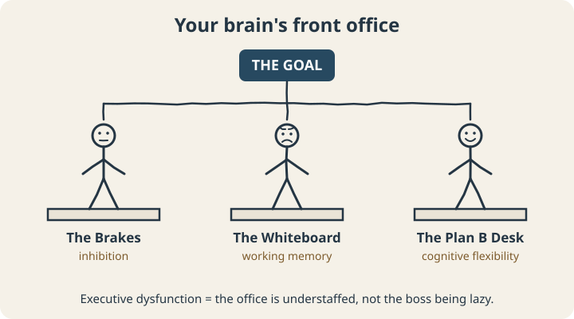
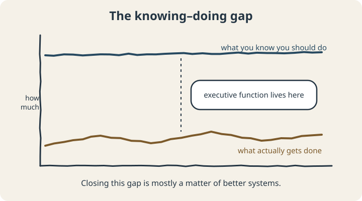

September 22, 2026
What Is Executive Dysfunction? (No, It’s Not Laziness)

Somewhere in the last few years, “executive dysfunction” went from a phrase you’d only hear from a neuropsychologist to something people type into Google at 1 a.m. after failing to do laundry for the third day in a row.
That’s mostly a good thing. A lot of people who spent years calling themselves lazy finally have a more accurate word. But popular terms get fuzzy fast, so let’s pin this one down: what executive function is, what it looks like when it struggles, and what the research does — and doesn’t — say.
Meet your brain’s front office
“Executive functions” are the mental skills that manage all your other mental skills. They don’t do the work. They decide what work gets done, in what order, and keep you on track while you do it.
Researchers disagree about exactly how to carve them up, but one of the most widely cited reviews, by developmental neuroscientist Adele Diamond, describes three core executive functions that the more complex ones are built on:1

- The Brakes (inhibition). Stopping yourself from acting on the first impulse — not checking your phone, not blurting the thing, not abandoning the report for something shinier. It also covers filtering out distractions so you can stay on one thing.
- The Whiteboard (working memory). Holding information in mind while you use it. Remembering the three things you walked into the kitchen for. Following a conversation while planning your reply. Keeping the steps of a task in order.
- The Plan B Desk (cognitive flexibility). Switching approaches when the first one isn’t working, shifting between tasks, seeing a problem from another angle.
Stack those three together and you get the higher-order stuff people actually notice: planning, organizing, managing time, starting tasks, and regulating emotions long enough to follow through.
So what is executive dysfunction?
Executive dysfunction is when those management skills consistently struggle to do their job, badly enough to cause real problems in daily life. Not a bad week. A pattern.
And here’s the part that makes it so confusing to live with: executive dysfunction rarely shows up as not knowing what to do. It shows up as knowing exactly what to do and not being able to make yourself do it.

This is why “just make a to-do list” is such frustrating advice. You probably have six to-do lists. The list was never the problem. The problem lives in the gap between the list and the doing.
What it looks like in real life
Executive dysfunction wears a lot of disguises. Some common ones:
- Task initiation: you can’t start, even on things you want to do (sometimes called ADHD paralysis)
- Time management: chronic lateness, surprise deadlines, “five minutes” that last forty (see time blindness)
- Working memory: losing your train of thought mid-sentence, forgetting what someone told you ten seconds ago, the classic kitchen doorway amnesia
- Organization: the “floordrobe,” the 400 open tabs, papers that migrate into piles and never leave
- Switching: getting stuck on one task, or struggling to change plans without a mini meltdown
- Emotional regulation: small frustrations landing with outsized force, and taking a long time to settle
Everyone has some of these some of the time. It’s the frequency, the intensity, and the cost that matter.
Is executive dysfunction the same as ADHD?
No, and this is worth getting right.
Executive dysfunction is a description of what’s happening, not a diagnosis. It shows up in ADHD, but also in autism, depression, anxiety, traumatic brain injury, chronic stress, and sleep deprivation. (Seriously: if you’re sleeping five hours a night, some of your “executive dysfunction” may just be a very tired brain.)
Even within ADHD, the connection is messier than the internet suggests. A large 2005 meta-analysis pooled 83 studies comparing people with and without ADHD on executive function tests. People with ADHD did score lower on average across every EF measure, with the biggest differences in response inhibition, vigilance, working memory, and planning. But the differences were moderate, and not everyone with ADHD showed them. The authors concluded that executive function weaknesses are “neither necessary nor sufficient” to cause all cases of ADHD.2
For a sense of scale: a 2021 global review estimated that about 2.6% of adults have ADHD that persisted from childhood, and about 6.8% have significant ADHD symptoms as adults.3 That’s a lot of people, but it’s far from everyone who struggles with executive function.
No, it’s not laziness. Here’s the difference.
Laziness is not wanting to do something. Executive dysfunction is wanting to and not being able to get the machinery moving.
A quick test: does the thing get easier when it becomes urgent, interesting, or when someone else is in the room? Lazy doesn’t usually care about those. Executive dysfunction often responds dramatically to them, because they’re supplying structure your front office is short on.
What actually helps
The core idea behind most effective support is simple: if the internal system is understaffed, move the work outside your head.
- For The Brakes: change the environment instead of relying on self-control. Phone in another room. Website blockers. The cookies on a high shelf. It’s not cheating; it’s engineering.
- For The Whiteboard: write everything down the moment it enters your head. One capture spot, not six. Checklists for any routine with more than three steps.
- For The Plan B Desk: give transitions a runway. A five-minute warning before switching tasks. A written “if this doesn’t work, then I’ll try…” before you start.
- For everything: make the first step tiny, make time visible, and add other people when you can. Structure you borrow from outside is still structure.
And if the struggle is significant or new, it’s worth talking to a doctor or psychologist. Sleep problems, depression, thyroid issues, and ADHD all deserve to be ruled in or out properly, and some of them respond well to treatment.
The bottom line
Executive dysfunction is what happens when the brain’s management layer can’t keep up with what’s being asked of it. It’s common, it’s real, it has many possible causes, and it is very much not a character flaw. The most useful next step isn’t more willpower. It’s figuring out which specific skills are struggling, so you can build support around those.
That’s exactly what our free Executive Skills Questionnaire is for: a 30-item self-assessment that maps your relative strengths and weak spots across five areas and suggests tools for each.
Scope note: This article is educational. The ESQ-R is a self-reflection tool, not a diagnostic test, and coaching isn’t a substitute for medical or psychological care.
Sources
- Diamond, A. (2013). Executive functions. Annual Review of Psychology, 64, 135–168. doi.org/10.1146/annurev-psych-113011-143750
- Willcutt, E. G., Doyle, A. E., Nigg, J. T., Faraone, S. V., & Pennington, B. F. (2005). Validity of the executive function theory of attention-deficit/hyperactivity disorder: A meta-analytic review. Biological Psychiatry, 57(11), 1336–1346. doi.org/10.1016/j.biopsych.2005.02.006
- Song, P., Zha, M., Yang, Q., Zhang, Y., Li, X., & Rudan, I. (2021). The prevalence of adult attention-deficit hyperactivity disorder: A global systematic review and meta-analysis. Journal of Global Health, 11, 04009. doi.org/10.7189/jogh.11.04009